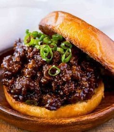

Korean Bbq Sloppy Joes

Korean Bbq Sloppy Joes
This is a sweet and savory beef dish that is sure to impress. This
recipe is very easy to make and takes very little time to prepare.
Ingredients
- 1.5 Pounds of Ground Beef, 85/15 Fat Content
- 3 Cloves Garlic, Minced
- 2 Teaspoons Sesame Oil
- 1/2 Ketchup
- 1/2 Cup Hoisin
- 1/2 Cup Water
- 2 Tablespoons Low Sodium Soy Sauce
- 1 Tablespoon Rice Wine Vinegar
- 1/2 Teaspoon Sriracha
- 2 Green Onions, Sliced Thinly
- 1 Tablespoon Sesame Seeds
- 4 Brioche Rolls -OR- 1 Cup Basmati Rice (Dried)
Steps
- Take out a medium sized bowl and add in the garlic, sesame oil,
ketchup, hoisin, water, soy sauce, rice wine vinegar, and
sriracha. Next, lightly mix everything until even and smooth.
- If you decide to use rice instead of brioche rolls, rinse your
rice and prepare it according to the instructions on the bag or
on your rice cooker. Complete the following steps while the rice
is cooking.
- Take out a large skillet and add the beef. Next, turn the heat to
medium and break up the beef into chunks about the size of
a grape.
- Cook the beef until it is well browned (5-6 minutes). Then
add in the mix of ingredients from step 1. Next, stir everything
together well until the sauce starts to evaporate and the mixture
becomes "sloppy" (5-6 minutes)
- Bun -OR- Rice
- Bun: Toast the buns and spoon over the beef mixture onto
the buns. Finally, top the beef mixture with green onions
and sesame seeds.
- Rice: Place 1-2 Cups of rice on a plate and top it with 1
cup of the beef mixture. Finally, top the beef mixture
with green onions and sesame seeds.